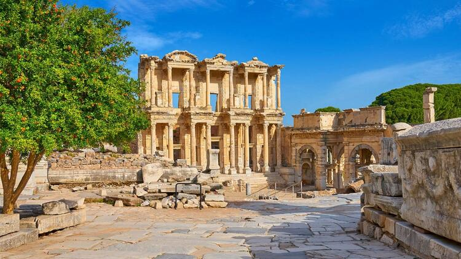

Efes Antik Kenti
Efes antik kenti hakkında kısa bilgi;
Kuruluş yılı milattan önce 6000 senelerine kadar dayanan Efes antik kenti farklı dönemlerde büyük imparatorlukların bünyesinde yer almıştır. Roma yunan ve Türklerin bir antik kenti olarak tarihe geçmiştir. Gerek tarihi açıdan gerekse de kültürel açıdan önemli bir antik kent olan Efes antik kenti dünya miras listesinde de yer alıyor. Bu tarihi antik kentin bünyesinde aynı zamanda artemis tapınağı Meryem ana evi ve ashab-ı keyf gibi tarihi yapıları da görebiliyorsunuz. Doğu ve batı arasında bir köprü görevi gören bu antik kent Helenistik ve roma uygarlıklarının sanat tarzlarını da tasarımında saklıyor. İzmir ilinin Selçuk ilçesinde bulunan Efes antik kenti ege bölgesinde tarihi ve kültürel açıdan gezilecek yerler arasında ilk sırada geliyor. Sene içinde belirli zamanlarda hem yerli turistler hem de yabancı turistler bu bölgeyi sıkça ziyaret etmektedir.